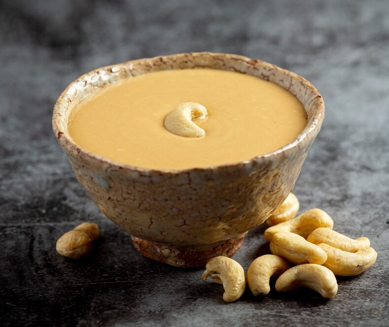

Ingredients
- 1 litre Milk
- 1/2 cup Sugar
- 1/2 tsp Cardamom Powder
- 1/4 cup Almonds, Pistachios
- 1/4 tsp Saffron
- 1/4 tsp Nutmeg Powder
Instructions
- Boil milk, simmer on low flame until reduced to half.
- Add sugar, cardamom powder, saffron, nutmeg powder, almonds, and pistachios.
- Simmer for 5 minutes. Serve hot or cold.